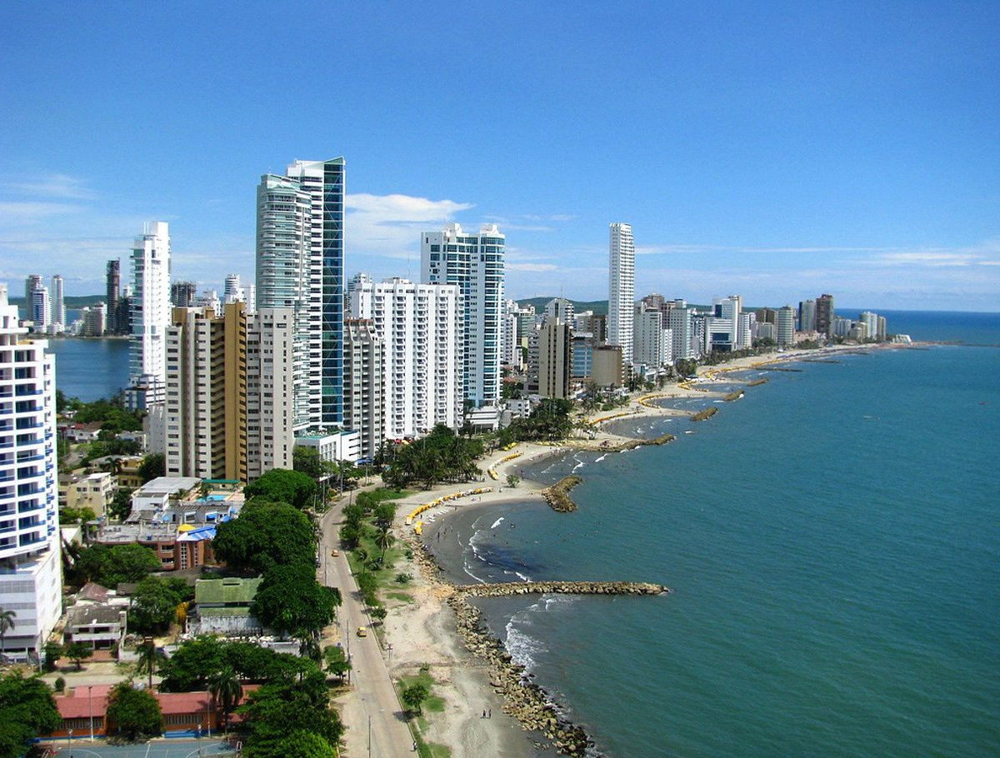
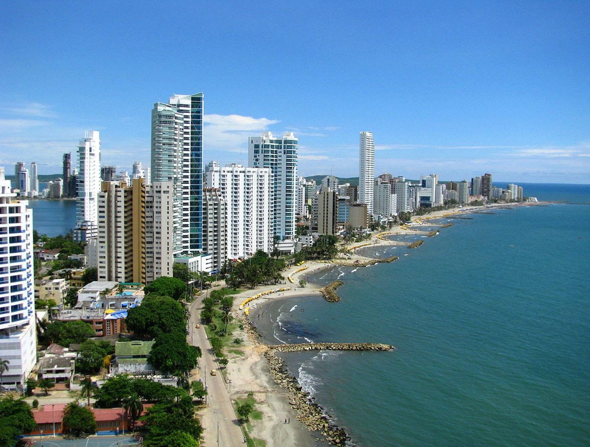

Cartagena
Cartagena, a vibrant coastal city in Colombia, is renowned for its rich history, stunning architecture, and Caribbean charm. Explore its well-preserved colonial walled city, a UNESCO World Heritage site, filled with colorful buildings, lively plazas, and bustling markets. Enjoy beautiful beaches, delicious local cuisine, and a vibrant nightlife. With its unique blend of culture, history, and natural beauty, Cartagena is a must-visit destination for any traveler.
During the colonial period, it served as a major port for gold and other precious goods from South America. Due to its wealth, the city was frequently attacked by pirates, leading to the construction of impressive walls and fortifications, many of which can still be visited today.
 

Things to do in Cartagena
- Explore the Walled City
- Visit Castillo San Felipe
- Relax at Playa Blanca
- Stroll through Getsemani
- Tour the Palace of the Inquisition
- Discover the Gold Museum
- Try local cuisine
- Explore the Rosario Islands
Why visit Cartagena?
Visit Cartagena for its captivating blend of history, culture, and stunning scenery. The city's well-preserved colonial architecture and vibrant streets offer a glimpse into its rich past. Enjoy beautiful beaches, delicious local cuisine, and a lively atmosphere. With its unique charm and welcoming spirit, Cartagena is an unforgettable destination for travelers seeking adventure and relaxation.